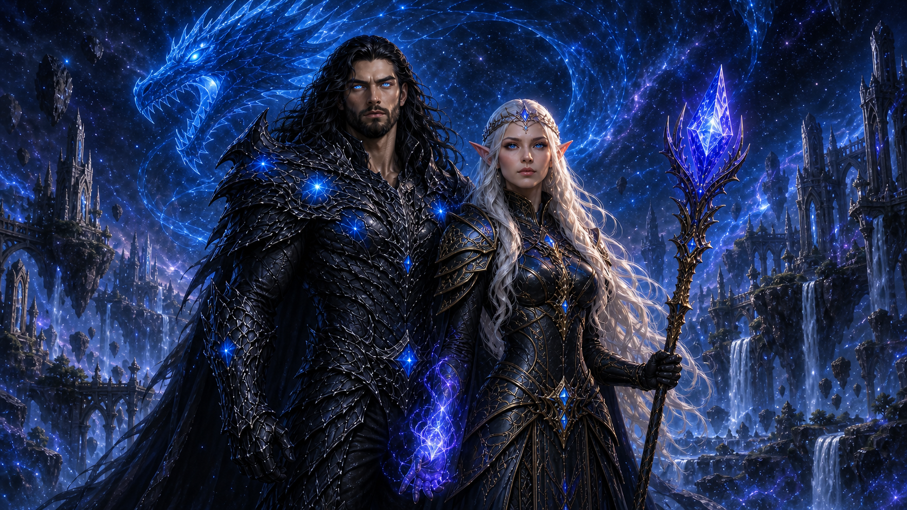
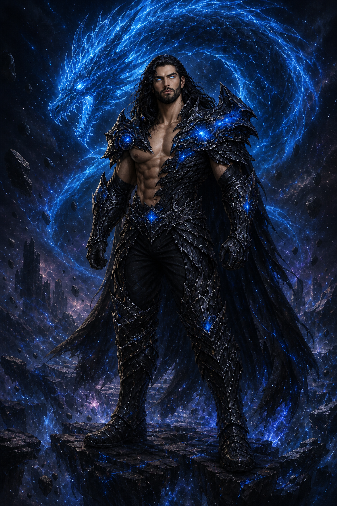
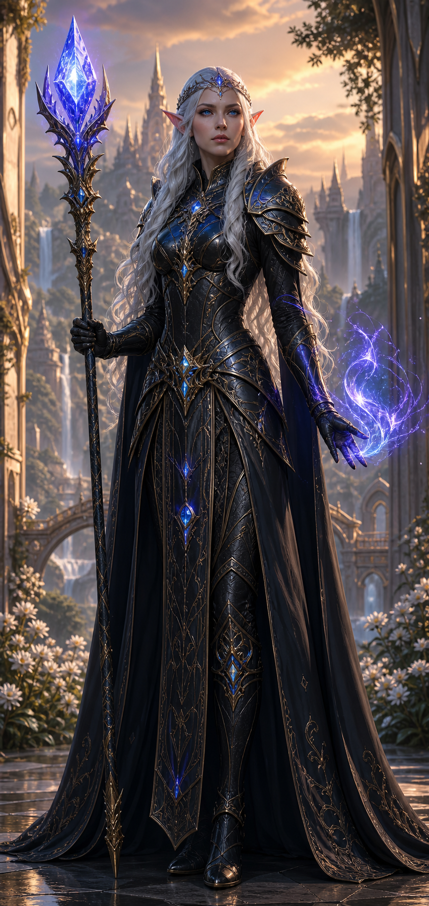
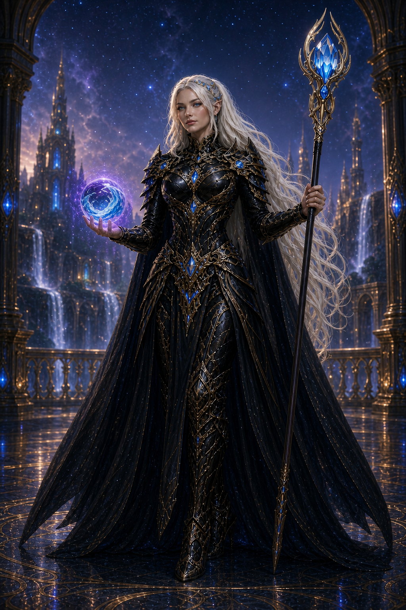
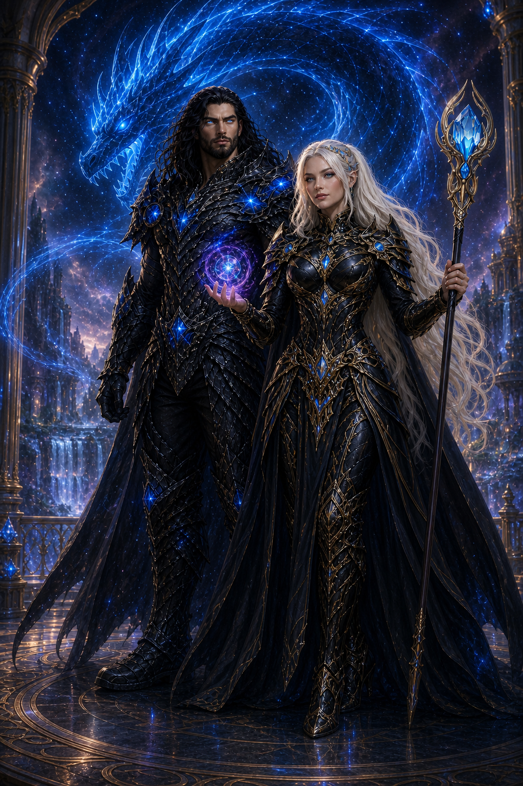

O primeiro vínculo
Yuri protegeu e criou Blue antes que o mundo conhecesse o poder que havia dentro dele.

Ele não nasceu deus. Chamado Yuri em sua primeira vida, atravessou linhagens, mundos e limites até tornar-se uma força em evolução constante — agora ao lado da rainha élfica Nimsay.
Um nome abandonado, uma ascensão conquistada e um poder que jamais deixou de crescer.
Nascido como descendente das linhagens Uchiha e Hyuuga, Yuri carregava desde o início uma herança incompatível com os limites de um único mundo. Em sua forma humana foi conhecido como Mestre dos Elementos e, mais tarde, Deus dos Elementos.
Sua divindade não foi um presente. Cada transformação, batalha e realidade atravessada aproximou-o de algo maior. Quando assumiu o nome Knull, passou a integrar a linhagem dos Null ao lado de Anull e Onull.
Knull rasga tempo e espaço, viaja entre realidades e multiversos e continua evoluindo. Nenhuma forma representa seu estado definitivo.

Antes de ser uma entidade colossal, Blue era apenas um ovo sob os cuidados de Yuri.
Yuri protegeu e criou Blue antes que o mundo conhecesse o poder que havia dentro dele.
O laço tornou-se um pacto capaz de atravessar matéria, espírito e energia divina.
Ao fundir-se com o Rei Dragão, Knull deixou de apenas carregar o poder dracônico e tornou-se parte dele.
Blue e Knull alcançaram uma nova existência; a Armadura de Dragão passou a evoluir junto de seu portador.
Companheira de Knull, Nimsay une a majestade élfica à força elemental das realidades.
Nimsay é uma rainha elfa de cabelos branco-prateados, olhos azuis e presença luminosa. Seu reino de palácios, jardins e cachoeiras representa a harmonia que ela jurou proteger.
Em sua forma régia, veste branco, ouro e pedras turquesa, dominando água e fogo. Em batalha assume uma armadura negra e dourada, empunha um cajado de cristal azul e manifesta energia azul-violeta.
Ao lado de Knull, Nimsay não é uma extensão de seu poder. Ela é seu contraponto: luz e sombra, criação e ruptura, rainha e guerreira em equilíbrio com o Deus Dragão.

Knull rasga espaço e tempo para atravessar realidades e multiversos.
Placas dracônicas ligadas a Blue crescem e evoluem junto de Knull.
Nimsay domina água, fogo e energia azul-violeta através de seu cajado.
O Deus Dragão, a rainha élfica e Blue diante das realidades.


Knull, Nimsay e Blue atravessam histórias e realidades. Um poder em evolução, uma rainha em equilíbrio e o dragão que tornou o pacto eterno.